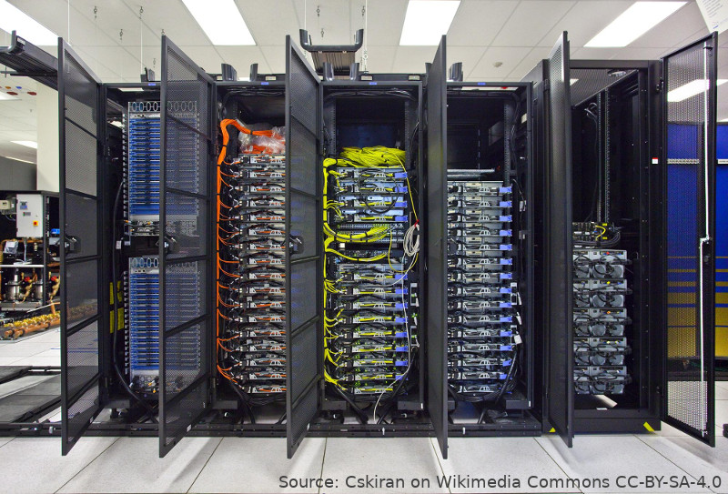

Running jobs on a cluster
Last updated on 2026-06-26 | Edit this page
Estimated time: 30 minutes
Overview
Questions
- How do I run Snakemake inside a HPC job?
- How do I have Snakemake run individual rules as HPC jobs?
- When should I do each of these?
Objectives
- Be able to run Snakemake within a single cluster job
- Be able to have Snakemake co-ordinate multiple cluster jobs
- Understand when each method is appropriate

So far, the workflow that we’ve been writing runs in a relatively short amount of time on our personal computer. But what happens if the amount of data we need to work with, or the amount of processing we need to do on those data, scales beyond what our computer can cope with? As with any other problem, at this point we must start looking at running on larger resources, such as high-performance or cloud computing.
Learning about using HPC is beyond the scope of this course, and depends strongly on the specific system you will be using, so this section assumes you already have access to a cluster and a basic understanding of how to use it. If this doesn’t describe you, feel free to skip to the next section!
Every cluster is different
In the following we will show the steps that are most commonly necessary to get working, but the exact implementation will depend on the setup of the specific machine that you’re using. If you have trouble, your local high-performance computing support team should be able to help fill in the gaps.
We will assume a cluster using Slurm as its scheduler, since that is currently the most commonly-deployed option; other schedulers will have different syntax but similar underlying principles.
Running Snakemake in a single batch job
Like any other computational tool, Snakemake can be run from inside a batch job on a cluster. Since compute nodes are generally more powerful than your personal workstation, and can be left running a job for a day or two without needing to worry about preventing the machine from going to sleep, this can be a lot more convenient for moderately intensive workflows.
Let’s open a new terminal, and use it to connect to the cluster we’ll be working on
ssh my-clusterTo begin with, unless your administrators have already installed it, we need to create an environment in which to install Snakemake. This might require steps something like:
module load conda
conda create -n snakemake -c conda-forge -c bioconda snakemake
conda activate snakemakeWe then need to get our workflow and data onto the machine. For your
own work, you will most likely download the workflow using
git clone. The data may already be on the machine, or you
may need to download it from another machine, or upload it, using
scp or rsync.
For the workflow we’re developing today, it is sufficient to re-use the ZIP file we used at the start of the lesson, and then copy across our changes to the workflow.
To start with, we need to choose a directory to work in. This should
be on a filesystem accessible to the nodes, and that uses high-speed
storage, since the workflow will read and write a lot of files here. On
some systems this may be called /scratch or
/work. Let’s say that we are on a system where we have a
/scratch/my.username directory.
On the cluster, we then run
cd /scratch/my.username
unzip /scratch/shared/su2pg_starter.zipGetting everyone to download and extract the data is time-consuming; it may be better to provide the download in a shared directory accessible to all users.
Here, /scratch/shared/su2pg_starter.zip should be the
path to the ZIP file we downloaded at the start, which your instructor
may have downloaded to a convenient shared location to save everyone
downloading the same file. If not, you can download it using
# Only run this
# if your instructor hasn't made the ZIP file available in a shared directory
curl -o su2pg_starter.zip https://zenodo.org/records/17476887/files/su2pg_starter.zip?download=1
unzip su2pg_starter.zipBack in the terminal running on our local machine, we can then run
scp -r workflow/ metadata/ config/ my-cluster:/scratch/my.username/su2pg/Replace my-cluster and /scratch/my.username
with the cluster and directory you’ve used above. This updates the
workflow with all the changes we’ve made so far in this lesson.
Network connections
Many clusters do not let their compute nodes connect to the Internet.
Because of this, if you run snakemake with the
--use-conda option in a job script, and the Conda
environments are not already initialised on the disk, then the run will
fail, as Conda won’t be able to create the environments (since that
would require downloading the packages from the Internet).
To work around this, we can ask Snakemake to create the environments and download the packages from the login node, before we submit the main job to run the workflow.
snakemake --conda-create-envs-onlyWe can now prepare a job script to tell the scheduler to run our job.
The exact set of variables you need will vary from system to system, but
the approximate content will be along the lines of the following, which
we can put into a file submit.sh:
BASH
#!/bin/bash
#SBATCH --job-name su2pg
#SBATCH --time 0:10:00
#SBATCH --nodes 1
#SBATCH --exclusive
#SBATCH --output snakemake.%j.out
module load conda
conda activate snakemake
snakemake --cores all --use-condaHere, we use --nodes 1 and --exclusive to
request an entire compute node, which Snakemake can then use as much of
as it needs. If you know that your workflow has a small number of very
slow, single-core processes (for example, five), then you could replace
--exclusive with --ntasks 1 --cpus-per-task 5,
so that you don’t occupy an entire node when your workflow will only use
a fraction of it. The --time option you will want to modify
to match the expected run time of your workflow; it’s better to
overestimate here, since the scheduler will stop your job if it
overruns.
Once that is prepared, we can submit it:
sbatch submit.shOnce there is capacity, Slurm will start the job, and you should
quickly see output appearing, both in the log file
snakemake.[job identifier].out, and in the files the
workflow creates.
We can check the status of the job with squeue; once it
finishes (either appears in the CG state, or disappears
from the list entirely), then the job has completed and we may check the
output.
tail snakemake.*.out*It’s important that we verify that the workflow completed successfully, otherwise we might only find out down the line that particular outputs are missing, and lose time needing to regenerate them. Once we’ve done that, we can copy the results back to our local machine to publish:
rsync -r my-cluster:/scratch/my.username/su2pg/assets .Managing multiple jobs with Snakemake
We’ve now seen how we can run a Snakemake workflow within a single cluster job, making use of one (or part of one) compute node. What if our workflow is too demanding to be run this way? For example, if it has many steps each of which require an entire node, and take many hours to complete?
For these workflows, we can use an executor plugin to allow Snakemake to submit jobs directly to the queue.
The initial setup is the same as above:
- Create a Conda (or similar) environment, install Snakemake in it, and activate it;
- Download the workflow and data;
- Optionally, pre-download the Conda environments needed for the workflow.
With this done, we must now install the executor plugin. For Slurm, we can do this via:
pip install snakemake-executor-plugin-slurmWe can now set up a profile, to tell Snakemake and the
executor plugin the parameters they need to successfully run and manage
jobs. On some systems, the administration team may have already set up a
global file; located in a subdirectory of
/etc/xdg/snakemake; otherwise, you’ll need to create one
yourself, in a subdirectory of ~/.config/snakemake.
This can include any of the options set at the Snakemake command line, but there are some that it is a good idea to set in the config file rather than needing to specify every time.
Let’s create such a file now:
mkdir -p ~/.config/snakemake/my-cluster
nano ~/.config/snakemake/my-cluster/profile.yamlYAML
executor: slurm
jobs: 30
cores: 1080
software-deployment-method: conda
default-resources:
mem_mb: 4096
slurm_account: my-projectLooking through these in turn:
-
executor: slurm: Use the Slurm executor plugin. If this plugin isn’t installed and visible to Snakemake, then Snakemake will exit with an error. -
jobs: 30: Queue at most thirty jobs at once. In many cases it’s not useful to queue far more jobs than the system will allow to run at once, particularly if they will need to be cancelled if the workflow fails. -
cores: 1080: Queue jobs using at most 1080 CPU cores concurrently, for the same reason as the previous limit. -
software-deployment-method: conda: This is an alternative way of expressing the--use-condaoption; i.e. Snakemake should use the specified Conda environments. -
default-resources: Unless a rule specifies specific resource requirements, then the ones below will apply. -
mem_mb: 4096: Since our jobs will typically share nodes, it’s important to let Slurm know how much memory each will require; otherwise, it may underpopulate nodes to allow each job far more memory than it actually requires. -
slurm_account: my-project: Most clusters have a mechanism to specify which “project” or “account” a job is associated with. On many clusters, you must specify this in the job script, particularly if you are a member of multiple projects. Specifying it here allows Snakemake to pass this through to the scheduler when it submits jobs.
Once this is working, you can share the profile with other users on the cluster, so discuss this with your cluster administrator.
With a profile in place, we can now run the workflow from the login node:
snakemake --profile my-clusterSnakemake will build the DAG on the login node, and then submit a job
to the scheduler for each job in the workflow. You may want to open a
second terminal to keep an eye on the progress of these jobs in
squeue.
If your cluster does not use Slurm, the full range of executor plugins for Snakemake and instructions for configuring them, can be found at the Snakemake plugin catalog.
Running (and not running) on login nodes
In general, one should not run computationally-intensive workloads on
the login node of a cluster. In principle, the controlling
snakemake process should not be computationally intensive,
since the real work is being done in the jobs it submits; however, some
HPC centres and administrators do no appreciate long-running process of
any kind on their login nodes.
Running on the login node also creates problems if your network connection drops, or your computer goes to sleep.
An alternative approach is to run the primary snakemake
process in a batch job, allocated minimal resources (a single CPU core
and a small amount of memory), that then in turn submits further jobs
for actual work. This relies on the machine being configured to allow
job submission from compute nodes, which is not always allowed.
Something that this also allows is specifying that some rules should not
bother submitting a Slurm job. To do this, add
localrule: True to the rule definition; this marks that the
rule should run in the main snakemake process.
If you are going to be running large Snakemake workflows on a cluster, it’s best to speak to the centre administrator in advance to understand how they would prefer that you do so without inconveniencing other users of the machine.
Running workflows on HPC or Cloud systems could be a whole course in itself. The topic is too important not to be mentioned here, but also complex to teach because you need a cluster to work on.
If you are teaching this lesson and have institutional HPC then ideally you should liaise with the administrators of the system to make a suitable installation of a recent Snakemake version and a profile to run jobs on the cluster job scheduler. In practise this may be easier said than done!
If you are able to demonstrate Snakemake running on cloud as part of a workshop then we’d much appreciate any feedback on how you did this and how it went.